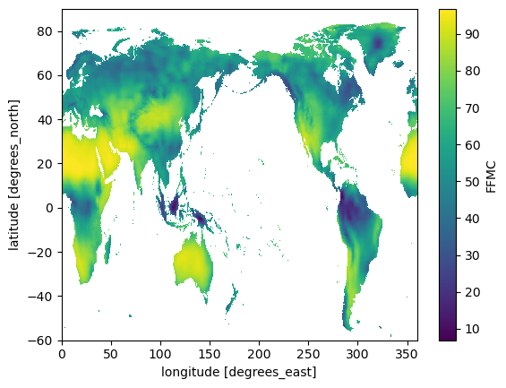
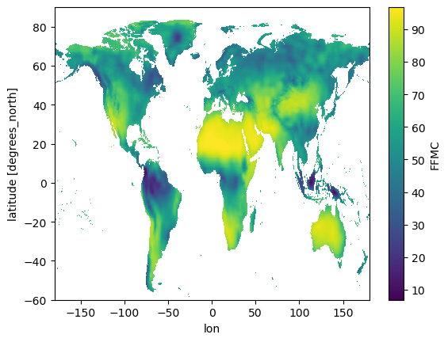

import boto3
import rasterio # noqa
import rio_cogeo.cogeo
import rioxarray # noqa
import s3fs
import xarray as xr
from rasterio.io import MemoryFileConverting NetCDF to COG (CMIP6)
You can launch this notbook using mybinder, by clicking the button below.

Approach
Cloud-optimized GeoTIFF (COG) is a geospatial raster (image) data format optimized for on-the-fly analytics and visualization of raster data in cloud applications.
Converting NetCDF (climate data) to COG can be relevant when the data should be included in GIS or web map applications.
This tutorial shows how this conversion can be done using Xarray and rioxarray, in-memory, avoiding temporary files on-disk.
- Step-by-step guide to conversion from NetCDF to Cloud-Optimized GeoTIFF
- Combined workflow including upload to S3
Step by step
Step 0 - Installs
Step 1 - Inspect source NetCDF
SOURCE_URI = (
"cmip6-staging/Sample/FWI/Yearly/MME/MME50_historical_fwi_metrics_yearly_2014.nc"
)fs = s3fs.S3FileSystem()
fileobj = fs.open(SOURCE_URI)
ds = xr.open_dataset(fileobj, engine="h5netcdf")
ds<xarray.Dataset> Size: 40MB
Dimensions: (lat: 600, lon: 1440)
Coordinates:
* lat (lat) float64 5kB -59.88 -59.62 -59.38 -59.12 ... 89.38 89.62 89.88
* lon (lon) float64 12kB 0.125 0.375 0.625 0.875 ... 359.4 359.6 359.9
Data variables: (12/13)
FFMC (lat, lon) float32 3MB ...
DMC (lat, lon) float32 3MB ...
DC (lat, lon) float32 3MB ...
ISI (lat, lon) float32 3MB ...
BUI (lat, lon) float32 3MB ...
FWI (lat, lon) float32 3MB ...
... ...
FWI_N30 (lat, lon) uint16 2MB ...
FWI_N45 (lat, lon) uint16 2MB ...
FWI_P25 (lat, lon) float32 3MB ...
FWI_P50 (lat, lon) float32 3MB ...
FWI_P75 (lat, lon) float32 3MB ...
FWI_P95 (lat, lon) float32 3MB ...Step 2 - Select data variable
The NetCDF contains several data variables. We pick the first one for demo.
VARIABLE_NAME = "FFMC"da = ds[VARIABLE_NAME]da.plot();
da.encoding{'chunksizes': None,
'fletcher32': False,
'shuffle': False,
'source': '<File-like object S3FileSystem, cmip6-staging/Sample/FWI/Yearly/MME/MME50_historical_fwi_metrics_yearly_2014.nc>',
'original_shape': (600, 1440),
'dtype': dtype('<f4'),
'_FillValue': nan}Step 3. Conform to raster data conventions
Common practice in NetCDF lat/lon data the first grid cell is the south-west corner, i.e. latitude and longitude axes increase along the array dimensions.
Common practice in raster formats like GeoTIFF is that the y-axis (latitude in this case) decreases from origin, i.e. the first pixel is the north-west corner.
We can reverse the latitude dimension like this:
da = da.isel(lat=slice(None, None, -1))
da.lat<xarray.DataArray 'lat' (lat: 600)> Size: 5kB
array([ 89.875, 89.625, 89.375, ..., -59.375, -59.625, -59.875])
Coordinates:
* lat (lat) float64 5kB 89.88 89.62 89.38 89.12 ... -59.38 -59.62 -59.88
Attributes:
units: degrees_north
standard_name: latitude
long_name: latitude
axis: YWe would also like the longitude axis to range from -180 to 180 degrees east, instead of 0 to 360 degrees east (matter of taste, not convention).
da = da.assign_coords(lon=(((da.lon + 180) % 360) - 180)).sortby("lon")
da.lon<xarray.DataArray 'lon' (lon: 1440)> Size: 12kB array([-179.875, -179.625, -179.375, ..., 179.375, 179.625, 179.875]) Coordinates: * lon (lon) float64 12kB -179.9 -179.6 -179.4 ... 179.4 179.6 179.9
Check that the data still looks right, just rotated along x-axis:
da.plot();
Now we need to set raster data attributes which are missing from the NetCDF, to help rio-xarray infer the raster information
da.rio.set_spatial_dims("lon", "lat", inplace=True)
da.rio.write_crs("epsg:4326", inplace=True)<xarray.DataArray 'FFMC' (lat: 600, lon: 1440)> Size: 3MB
[864000 values with dtype=float32]
Coordinates:
* lat (lat) float64 5kB 89.88 89.62 89.38 ... -59.38 -59.62 -59.88
* lon (lon) float64 12kB -179.9 -179.6 -179.4 ... 179.4 179.6 179.9
spatial_ref int64 8B 0Check CRS
da.rio.crsCRS.from_epsg(4326)Check affine image transform:
a = width of a pixel
b = row rotation (typically zero)
c = x-coordinate of the upper-left corner of the upper-left pixel
d = column rotation (typically zero)
e = height of a pixel (typically negative)
f = y-coordinate of the of the upper-left corner of the upper-left pixelda.rio.transform()Affine(0.25, 0.0, -180.0,
0.0, -0.25, 90.0)Step 4 - Write to COG and validate in-memory
For the demonstration here, we do not write the file to disk but to a memory file which can be validated and uploaded in-memory
GeoTIFFs / COGs can be tuned for performance. Here are some defaults we found to work well (check out this blog post for detail).
COG_PROFILE = {"driver": "COG", "compress": "DEFLATE", "predictor": 2}with MemoryFile() as memfile:
da.rio.to_raster(memfile.name, **COG_PROFILE)
cog_valid = rio_cogeo.cogeo.cog_validate(memfile.name)[0]
cog_validTrueCombined workflow from conversion to upload
SOURCE_URI = (
"cmip6-staging/Sample/FWI/Yearly/MME/MME50_historical_fwi_metrics_yearly_2014.nc"
)VARIABLE_NAME = "FFMC"COG_PROFILE = {"driver": "COG", "compress": "DEFLATE", "predictor": 2}DESTINATION_BUCKET = None
DESTINATION_KEY = Nonefs = s3fs.S3FileSystem()
with fs.open(SOURCE_URI) as fileobj:
with xr.open_dataset(fileobj, engine="h5netcdf") as ds:
# Read individual metric into data array (only one time in yearly NetCDFs)
da = ds[VARIABLE_NAME]
# Realign the x dimension to -180 origin for dataset
da = da.assign_coords(lon=(((da.lon + 180) % 360) - 180)).sortby("lon")
# Reverse the DataArray's y dimension to comply with raster common practice
if da.lat.values[-1] > da.lat.values[0]:
da = da.isel(lat=slice(None, None, -1))
# Set raster attributes
da.rio.set_spatial_dims("lon", "lat")
da.rio.write_crs("epsg:4326", inplace=True)
with MemoryFile() as memfile:
da.rio.to_raster(memfile.name, **COG_PROFILE)
# Validate COG in-memory
cog_valid = rio_cogeo.cogeo.cog_validate(memfile.name)[0]
if not cog_valid:
raise RuntimeError("COG validation failed.")
# Upload to S3
if DESTINATION_BUCKET is not None:
client = boto3.client("s3")
r = client.put_object(
Body=memfile,
Bucket=DESTINATION_BUCKET,
Key=DESTINATION_KEY,
)
if r["ResponseMetadata"]["HTTPStatusCode"] != 200:
raise RuntimeError("Upload failed.")